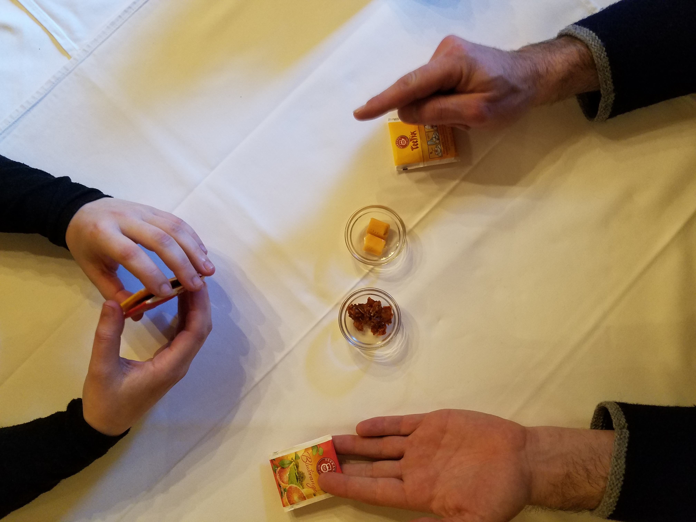
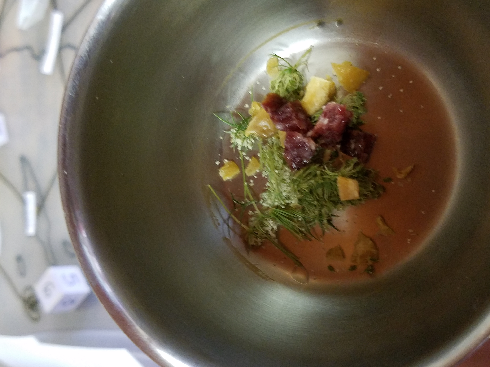
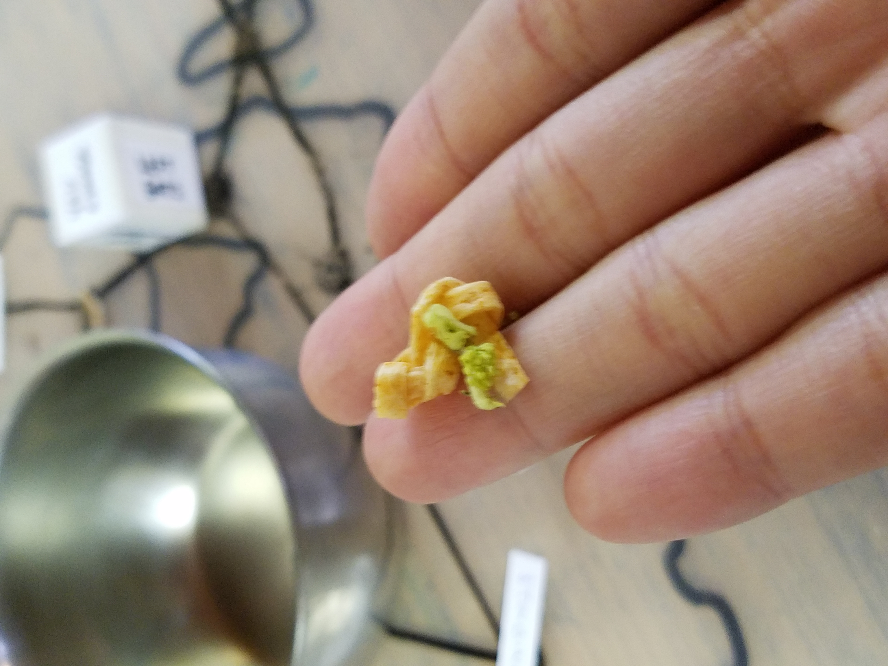
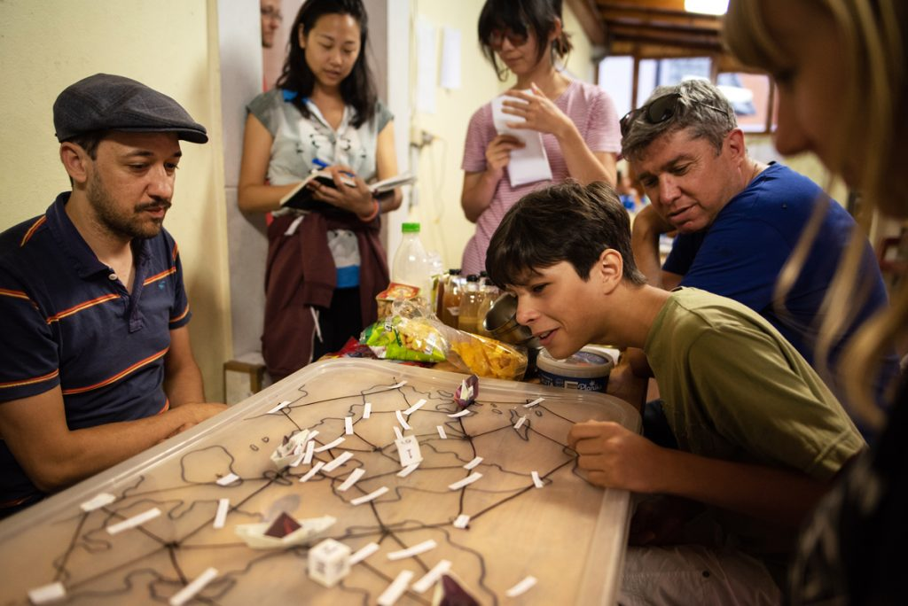

Home Cooked | An Edible Boardgame
In collaboration with Grace Cong Xin WongOn pause until after pandemic
Food is as migratory as the people who eat it. ‘Traditional’ cuisine is not always comprised of ingredients local to the region. The modern pizza is Italian in origin, but tomatoes came from the Aztecs. American hot dogs came from German style wieners, but the act of stuffing ground meat into casings goes all the way back to the ancient Sumerians and Chinese. This contradictory notion of foreign ingredients in traditional local cuisine call into question the origin stories of ‘authentic’, regional food, and what defines authenticity.
‘Home’ Cooked acts as a physical manifestation of the generational process of developing distinct cultural traditions through global exchange and migration. My collaborator, Grace, and I developed a taste based game mechanics to share how a ‘foreign’ ingredient makes its way into a new country and integrates into a region’s existing food vocabulary. Playing the game challenges players to ask themselves questions like, “What was pizza (Italian) before Italy imported tomatoes from South America?”; and “What was Szechuan food before China imported chilis from the Portuguese?”
Players must create different methods of preparing the same foods from other countries. In the process, they learn about the environmental factors that go into securing the supply chain of local goods used in their creations, and can then extend the level of care learned through the game to their own community. The game makes learning about the sheer expanse of global food trade into a sensory experience.
Supported by Prince Claus Fund
Developed at PIFcamp, Saari Residence, and ORTung Hintersee
 Prototype 1: Our first prototype focused on trade, both across countires and between players
Prototype 1: Our first prototype focused on trade, both across countires and between players
 Prototype 2: The goal was to create a regional item that puts your country on the culinary map
 Prototype 2: Just as champagne can only be made in champagne, players aim to invent tradition with ingredients from different countries
 Prototype 2: We developed rules emphasized stealing or collaborating. Sometimes players intentionally made terrible tasting dishes at the chance someone else might have to eat it. Though this was a fun update, we decided to shift further into collaboration based mechanics
Prototype 2: We developed rules emphasized stealing or collaborating. Sometimes players intentionally made terrible tasting dishes at the chance someone else might have to eat it. Though this was a fun update, we decided to shift further into collaboration based mechanics
 Prototype 2: The full board consisted of ingredients and a map. At this stage, we knew we wanted everyone to be edible, but were still deciding between a starch or vegetable base
Prototype 2: The full board consisted of ingredients and a map. At this stage, we knew we wanted everyone to be edible, but were still deciding between a starch or vegetable base
 Prototype 2: Our first two prototypes were developed at PIFcamp, a maker camp in Soca Valley, Slovenia
 Prototype 3: Our next prototype was developed at Saari Residence in Mynamaki, Finland. After several playtests, we shifted towards a more territory, charcuterie based design to create more visual cues for collaboration
Prototype 3: Our next prototype was developed at Saari Residence in Mynamaki, Finland. After several playtests, we shifted towards a more territory, charcuterie based design to create more visual cues for collaboration
 Prototype 3: We developed mini games to inject moments of inquiry, silly play, and historical reflection into game play
Prototype 3: We developed mini games to inject moments of inquiry, silly play, and historical reflection into game play